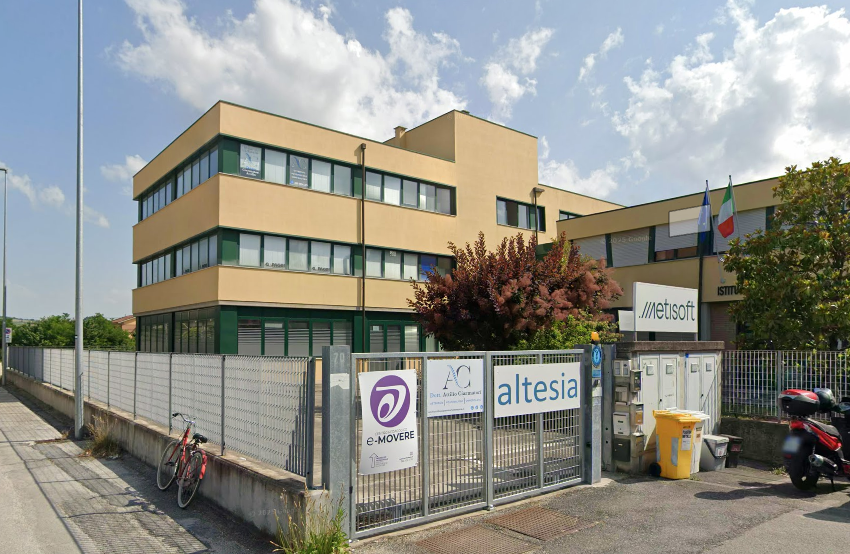

Innovative Solutions
Percorsi per le Competenze Trasversali e l'Orientamento
FSL presso Altesia S.r.l.
Un'esperienza per osservare da vicino il lavoro nel settore informatico e collegare le conoscenze scolastiche a compiti reali.

Attivita distribuite in piu momenti dell'anno
Affiancamento, esercitazioni e attivita operative
Attivita
Cosa ho fatto
Programmazione in C#
Ho lavorato su esercizi e logiche di programmazione, consolidando concetti come variabili, condizioni, cicli, metodi e organizzazione del codice.
Sviluppo web
Ho approfondito HTML, CSS e PHP, imparando a strutturare pagine, curare l'interfaccia e ragionare sul rapporto tra frontend e backend.
Progetto Apple Clone
Ho realizzato una pagina ispirata al sito Apple, lavorando su layout responsive, ordine visivo e attenzione al dettaglio.
Apri il progetto"L'esperienza mi ha permesso di vedere l'informatica come un lavoro fatto di competenza tecnica, metodo e confronto continuo."